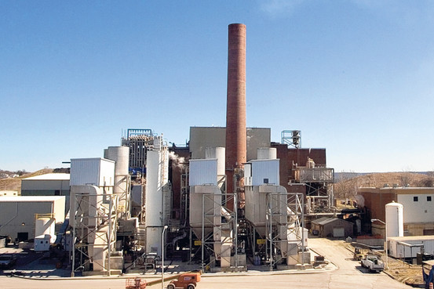

The Harrisburg
Incinerator Project
A Cautionary Tale in Public Finance
What We're Covering Today
Harrisburg, Pennsylvania — a state capital of ~50,000 residents — nearly went bankrupt over a municipal waste incinerator. The city accumulated over $450 million in debt and was forced into state receivership in 2011. This case dissects every financial misstep and distills lasting lessons for public financial managers.
This case directly illustrates capital budgeting, debt management, fiscal oversight, governance failures, and intergovernmental fiscal relations — all core themes in public finance. Look for which principle is violated at each decision point.
The Original Incinerator: Built for Trouble
Harrisburg's trash-to-steam incinerator opened in 1972 at a cost of $12.5 million. Designed to burn 500–720 tons of garbage per day and generate steam and electricity, it suffered mechanical breakdowns from the start and ran financial deficits for years.
Plant opens. Immediate mechanical breakdowns; operates well below capacity. Financial deficits accumulate through the 1970s and early '80s.
City must issue a $25 million bond just to remove "Mt. Ashmore" — an 80-foot mountain of accumulated ash. Already $25M in new debt before any upgrades.
Dioxin emissions far exceed new federal Clean Air Act standards. Local leaders privately call it "a facility that far exceeds our needs and ability to pay."
By the mid-1980s city leaders knew the incinerator was a money pit. The prudent choice — decommissioning — was deferred repeatedly, allowing liabilities to compound before the major crisis.
Pennsylvania State Capitol, Harrisburg, PA — a city of ~50,000 residents that would accumulate debt exceeding that of many large cities
A "white elephant" is a public asset that costs more to operate and maintain than its value justifies — impossible to dispose of easily, yet financially burdensome to keep. Harrisburg's incinerator fit this definition by 1980, fifteen years before the worst decisions were made.
Visual Timeline: How a 1972 Facility Became a 2011 Fiscal Emergency
The crisis was not a single bad year. It was a long arc of deferred maintenance, hidden liabilities, regulatory pressure, and escalating debt that stretched across four decades.
Harrisburg launches a $12.5 million trash-to-steam incinerator that almost immediately experiences mechanical trouble and chronic underperformance.
The city issues about $25 million in new debt to deal with "Mt. Ashmore," showing the project is already producing cleanup costs as well as operating losses.
The incinerator is shifted to The Harrisburg Authority, moving debt off the city's books on paper while the city still guarantees the obligations in practice.
Federal emissions rules force a choice: close the plant and absorb losses, or borrow heavily to modernize and expand a troubled facility.
Officials choose reconstruction, costs explode, contractors fail, and repeated borrowing turns a legacy problem into a full-scale debt crisis.
With debt tied to the incinerator overwhelming the city, Harrisburg enters state receivership and loses local control over its financial recovery.
This timeline helps students see the core public-finance lesson: the final emergency in 2011 was the cumulative result of many earlier decisions, not a sudden shock.
Off the Books, On the Hook: The Authority Gambit
In 1993, facing ongoing losses, the city sold the incinerator to The Harrisburg Authority — a separate municipal utility authority — for about $40 million. This accounting maneuver was meant to insulate the mayor from having to raise taxes. In practice, it changed nothing about the city's ultimate liability.
Moving debt off the city's books allowed Mayor Reed to avoid raising trash fees or property taxes, shielding him from political accountability. The Authority was a buffer — but one with the same mayor's allies on its board.
The Authority's board was appointed by Mayor Reed. The sale was financed by the Authority's own debt (not cash). The city guaranteed the Authority's bonds — meaning when repairs cost $10 million in 1996, the city backed the loan. The liability never left; it was just hidden.
By 2000, before any major renovation decision, the incinerator had already accumulated approximately $104 million in debt — on a facility originally built for $12.5 million.
Municipalities sometimes use special authorities or authorities to move debt off the city's official balance sheet. But if the city guarantees the debt, it remains a contingent liability. Rating agencies and auditors see through this; crises reveal it.
City owns incinerator — debt appears in city budget, creating political pressure.
Sell to Authority — debt moves off city books. Mayor avoids tax increases.
City guarantees Authority bonds — full liability returns through the back door.
EPA Shutdown Order, 2000: Two Paths, One Bad Choice
In December 2000, the U.S. EPA ordered the Harrisburg incinerator shut down due to toxic dioxin and mercury emissions far above federal standards. The city faced a binary ultimatum: permanently close the plant by 2003, or implement a full modernization plan to meet Clean Air Act requirements.
What it meant: Accept the loss. Pay off the ~$104M in existing debt over time. Arrange regional waste disposal with neighboring counties or LCSWMA (Lancaster County Solid Waste Management Authority). No more operating losses; no construction risk.
Political obstacle: Mayor Reed would have to admit the incinerator was a failure — a major political cost after 28 years in office.
What it meant: Retrofit the facility with modern pollution controls and expand capacity to 800 tons/day. Credible firms estimated $100–$180 million for the job. Issue new bonds to cover construction plus the loss of revenue during a 3+ year shutdown.
The gamble: Revenue from the new, larger plant would eventually pay off all debt. Consultants projected $1 billion in revenue over 30 years.
Officials argued that closing the plant would leave them with $104M in debt and no asset. True — but the correct question is not "how do we recover past costs?" but "what is the best path forward given current options?" The sunk cost of $104M was irrelevant to whether a $125M+ retrofit would create net value. A rigorous cost-benefit analysis — which was never conducted — might have shown closure was actually cheaper.
In public capital budgeting, a sunk cost is money already spent that cannot be recovered. Rational decisions consider only future costs and benefits. Continuing a failing project to "justify" past spending is the sunk cost fallacy — one of the most dangerous cognitive errors in public finance.
The 2003 Retrofit: How Not to Choose a Contractor
In 2003, the Harrisburg Authority approved an ambitious plan to rebuild and expand the incinerator. Then came the critical mistake: choosing the cheapest bid from an unqualified firm.
Bids solicited. Established waste-to-energy firms estimate $100–$180M. Barlow Projects Inc. (Colorado) bids $57M — roughly half the low end. Contract awarded to Barlow.
$125M in new bonds issued to fund construction, cover lost revenue during shutdown, and service existing debt. Total incinerator debt rises to ~$225M+.
Bonds paired with interest-rate swaps (derivatives with Royal Bank of Canada) intended to lower costs. No performance bond required from Barlow.
A bid 40–70% below all competitors is a red flag, not a bargain. For a project of this complexity and scale, it signals the contractor either doesn't understand the scope, is undercapitalized, or is willing to make unrealistic promises to win the contract.
No independent evaluation of Barlow's technical capacity. No independent evaluation of Barlow's financial capacity. No performance bond (standard insurance on construction contracts). No independent feasibility study of the project's financial projections. No serious evaluation of alternatives to the retrofit.
Consultants projected the new incinerator would generate $23M revenue in Year 1, growing to $44M by 2034 — enough to pay off all debt by 2034 if everything went as planned. These projections assumed a third boiler was completed, full waste volumes were secured, and energy prices held.
The 2003 bonds were paired with derivatives intended to reduce interest costs. Under the swap agreements, if the Authority couldn't make payments, the city was obligated to pay. If the city couldn't, Dauphin County had to pay. These cascading guarantees entangled multiple governments in the Authority's debts.
Simulation 1: Debt Sustainability Analyzer
Adjust the sliders to see how debt service compares to projected revenue and city budget capacity. This is the analysis Harrisburg should have done before issuing $125M in bonds in 2003.
Annual payment required on $X of bonds at Y% over 20 years. This is a fixed obligation — it must be paid regardless of incinerator revenue.
Projected incinerator income (tipping fees + energy sales) growing 5% annually. When this bar is shorter than the debt service bar, the gap must be filled from the city's general fund.
Harrisburg's entire annual operating budget. If debt service approaches this line, basic city services — police, fire, roads — are at risk.
Switch to "2010 Actual" to see the scenario where debt service exceeded the city's entire budget. That is what insolvency looks like.
Construction Collapse: The Barlow Disaster (2004–2007)
Almost immediately after the 2003 contracts were signed, the cascade of failure began. Barlow Projects proved exactly what a $57M bid on a $100–180M job should have suggested: the firm was undercapitalized and incapable of delivering.
Before construction begins, Barlow revises cost upward to $77M. Red flag ignored.
Barlow cannot obtain a performance bond — too small to be bondable for a project this size. Instead of canceling, Harrisburg uses payment holdbacks and penalty clauses as substitute protection.
Key subcontractor falls six months behind on boiler fabrication. Construction timeline collapses. Bond funds meant to cover interest during construction are running out.
Harrisburg faces a dilemma: enforce penalties (Barlow goes bankrupt, incomplete facility) or keep paying. Officials choose to pour good money after bad — forgiving penalties and advancing funds.
Barlow files for bankruptcy and abandons the project. The promised third boiler is never built — its parts were cannibalized. Covanta Energy brought in under emergency conditions to salvage the facility.
Another $60M bond issue to fund the emergency salvage. Harrisburg sues Barlow for $70M — symbolic, since the bankrupt firm cannot pay.
"All parties proceeded with the Barlow retrofit project in 2003 without adequate security in place to ensure Barlow's performance." No performance bond. No independent evaluation of Barlow's financial or technical capacity. A Pennsylvania Senate committee later remarked that Harrisburg "bet the city" on an unvetted contractor with unproven technology.
Reynolds Construction Management — a firm with a board member who also sat on the Harrisburg Authority's board — was awarded contracts without competitive bidding. The conflict was flagged by the Authority's solicitor. No corrective action was taken.
When Covanta Energy arrived to salvage the facility, they found: "streams of water flowed through the facility, amidst piles of ash; the all-important third boiler had been completely scavenged." The incinerator was finally restarted in mid-2008 — with only two boilers, at lower capacity than planned.
The Debt Spiral: Numbers That Defy Belief
By 2007, after Barlow's failure and the emergency $60M bond issue, Harrisburg's incinerator-related debt had exploded to $288–$310 million — nearly five times the city's annual budget, for a city of 50,000 people.
"The incinerator fiasco reflects the accumulated effects of bad decisions on critical project issues, ranging from contractor selection at the outset to the $60 million in debt taken on in 2007 when the facility was still incomplete."
Harrisburg Authority Forensic Audit, January 2012By 2011, Harrisburg's debt per capita was three times higher than Philadelphia's — Pennsylvania's largest city. A city of 50,000 had taken on infrastructure debt appropriate for a major metropolitan area.

The Harrisburg incinerator's tipping floor, where garbage is delivered and fed into the furnaces. The facility was expected to generate $23M+ annually. It never came close.
Affordability: Debt service exceeded the entire city budget — the clearest possible violation of debt capacity limits. Transparency: Much of this debt was carried by the Authority, obscuring the city's true exposure. Risk management: No contingency funds; no performance bond; cascading guarantees across three governments. Plain instruments: Interest rate swaps added complexity and risk officials did not understand.
Simulation 2: Revenue vs. Debt Service Gap
The 2003 plan assumed rapid revenue growth would eventually cover all debt service. Explore how different assumptions change the picture — and see why the official projections were dangerously optimistic.
What consultants promised: Year-1 revenue growing at the projected rate. This was the basis for issuing $125M in bonds in 2003.
Revenue scaled by the "actual as % of projected" slider. Reflects underperformance due to the third boiler never being completed.
The gap between debt service and actual revenue in each year. This gap must be covered by the city's general fund — or it becomes a default.
Click "What Actually Happened" above: $34M debt service, $15M revenue, only 25% of projections realized. The shortfall never closes over 15 years.
Insolvency Arrives: 2008–2011
Once the incinerator restarted in mid-2008 with only two operational boilers, the math was irretrievable. Revenue fell far short of debt service. Payments were missed. Other governments were dragged in. Default arrived.
Incinerator restarted. Only 2 boilers operational (third never built). Revenue far below 2003 projections; debt service requires $34–68M per year.
Dauphin County — which co-guaranteed the interest-rate swaps — pays $775,000 that Harrisburg cannot cover. County sues the city to recover the payment.
Bond insurer Assured Guaranty steps in to cover a $425,000 default. Harrisburg's annual debt service reaches $68M — greater than the city's entire operating budget.
City halts general fund contributions to incinerator debt. Officials argue paying would compromise basic services. Credit agencies downgrade the city.
City Council votes to file for Chapter 9 bankruptcy. Total debt and claims exceed $450 million.
When Harrisburg couldn't make swap payments to Royal Bank of Canada, the obligation flowed upward: Authority → City → Dauphin County. Instruments that were sold as cost-savers became a mechanism for spreading municipal insolvency across multiple governments. Pennsylvania's Auditor General later condemned such swaps as "lining pockets on Wall Street" at taxpayer expense.
Mayor Stephen Reed left office in January 2010 after 28 years — just as the full scale of the debt became undeniable. The city council, which had approved every bond guarantee nearly unanimously, now claimed they "didn't fully understand" the deals they had approved. New mayor Linda Thompson and the council could not agree on solutions.
Chapter 9 of the U.S. Bankruptcy Code allows municipalities to restructure debts while continuing to provide essential services. Unlike corporate bankruptcy, a city cannot be liquidated. The state of Pennsylvania moved to prevent Harrisburg from using this option.
State Takeover and the Path Out: 2011–2014
Pennsylvania blocked Harrisburg's bankruptcy filing, installed a state receiver, and engineered a resolution through forced asset sales. The city escaped insolvency — but paid a steep price.
Pennsylvania Legislature passes a law barring Harrisburg from declaring bankruptcy. City declared financially distressed under Act 47. State-appointed Receiver installed to control city finances.
133-page forensic audit released. Documents conflicts of interest, absent due diligence, unsecured contractor agreements, and the full chain of financial missteps.
Recovery plan implemented: Incinerator sold to Lancaster County Solid Waste Management Authority (LCSWMA) for ~$130M. Parking garages leased to private concessionaire for $200M+.
Receivership ends. Harrisburg avoids formal bankruptcy — but must operate under a strict long-term recovery plan. Credit reputation tarnished for years.
Former Mayor Reed indicted (unrelated charges — theft of artifact-purchase funds). No criminal charges filed for the incinerator deals specifically. 2018 civil lawsuit filed against engineers, bond lawyers, underwriters, and financial advisors who allegedly "profited handsomely while misleading officials."
State officials worried that a state-capital bankruptcy would: (1) damage Pennsylvania's reputation in bond markets; (2) shift costs to suburban commuters and county taxpayers; and (3) set a dangerous precedent. The desire to protect the municipal bond market drove the state's decision to prioritize creditor repayment over the city's clean break.
To pay off the incinerator debt, the city had to sell its waste-to-energy facility (now running profitably — for Lancaster County, not Harrisburg) and give up decades of future parking revenue. Residents faced higher trash fees and taxes under the recovery plan. The citizens who had no voice in the original decisions bore the full cost.
The Harrisburg incinerator, now operated by LCSWMA, is a functional and financially sustainable asset — serving the region's waste management needs just as originally envisioned. Harrisburg built it; Lancaster County benefits from it.
Six Critical Failures: What Went Wrong and Why
The Harrisburg incinerator crisis was not caused by a single decision. It was the product of six distinct, compounding failures — each of which could have been caught by standard public financial management practices.
- ✕ No independent feasibility study before the 2003 retrofit
- ✕ Used consultant projections ($1B over 30 years) without stress-testing
- ✕ Chose the lowest contractor bid with no vetting of capacity
- ✕ Required no performance bond from Barlow
- ✕ Issued interest rate swaps that officials did not understand
- ✕ Concentrated decision-making in one long-serving mayor; board rubber-stamped
- ✕ Treated refinancing as a solution to a structural problem
- ✕ Allowed conflicts of interest to go unaddressed on the Authority board
- ✓ Require independent feasibility study before any capital commitment
- ✓ Stress-test revenue projections at 50%, 75%, and 100% of forecast
- ✓ Vet contractors' technical AND financial capacity, not just price
- ✓ Require performance bonds on all major construction contracts
- ✓ Avoid complex instruments if officials cannot explain the worst-case exposure
- ✓ Ensure independent oversight: separate board members, public hearings
- ✓ Set debt service limits as % of budget and enforce them
- ✓ Enforce conflict-of-interest recusal policies strictly
"Everyone knew the incinerator was costing a fortune, but no one had done the math on all the debt deals."
Harrisburg City Council Member, quoted in post-crisis investigationThe forensic audit found that professional advisors — engineers, attorneys, financial consultants — all had close ties to Mayor Reed's office. Each new bond issuance generated fees for these advisors. Bad news was not welcomed. Critical professional skepticism was sidelined. This is a governance failure, not just a financial one: when the people paid to challenge assumptions have incentives to encourage more borrowing, the system fails.
Best Practices Checklist for Public Financial Managers
These six practices, drawn directly from what Harrisburg lacked, represent core standards of public financial management. They apply to any major capital project or debt issuance.
Conduct Independent Feasibility Analysis
Before any major capital commitment, commission an independent feasibility study. The analyst must have no financial stake in the project proceeding. Evaluate alternatives seriously — including the alternative of not proceeding.
Use Conservative Revenue Forecasts
Test revenue projections under pessimistic scenarios (50–75% of base case). If the project only works under best-case assumptions, it is too risky for public funds. Incorporate debt service reserve funds to buffer shortfalls.
Maintain Prudent Debt Limits
Track debt service as a share of operating revenues and total budget. Standard benchmarks: debt service below 15–20% of revenues is generally healthy; above 30% raises serious concerns. Per capita debt should be comparable to peer governments. If a project would breach these limits, it is unaffordable.
Require Performance Bonds and Vet Contractors
Performance bonds are standard on public construction projects for good reason: they guarantee project completion if the contractor fails. If a contractor cannot obtain a performance bond, that is disqualifying, not a technicality to work around. Low bids that are far below all competitors warrant special scrutiny, not celebration.
Avoid Complex Instruments Unless Fully Understood
Interest rate swaps, capitalized interest bonds, and other derivatives can be appropriate tools — but only when officials can articulate the worst-case exposure and have stress-tested those scenarios. "Our financial advisor recommended it" is not sufficient due diligence. If you cannot explain the downside, do not sign.
Ensure Independent Oversight and Transparency
Require competitive bidding for contractors and financial advisors. Enforce conflict-of-interest recusal policies. Appoint independent (non-mayoral-ally) members to authority boards. Communicate financial risks clearly and publicly. A culture where bad news is welcomed — not suppressed — is the single most important governance safeguard.
The Bottom Line
Harrisburg's incinerator crisis was not inevitable. At multiple points — 1985, 1993, 2000, 2003, 2005 — officials had an opportunity to change course. Standard financial management practices, applied at any of those moments, could have prevented the disaster.
Sunk cost reasoning drove a $225M commitment on top of $104M already lost. No independent feasibility study. Lowest bid selected from an unvetted, undercapitalized firm. No performance bond. Interest rate swaps that officials didn't understand. Concentrated power and zero independent oversight. Consultants with financial incentives to encourage more debt.
An independent feasibility study in 2003 that evaluated closure as a serious option. Conservative revenue forecasts that revealed the project was only viable in the best case. A performance bond requirement that would have disqualified Barlow. A debt-to-budget limit that would have flagged the 2007 bond issuance as unaffordable.
The Harrisburg case illustrates what happens when political urgency overrides financial logic, when institutional checks fail, and when officials treat complex capital markets as a mechanism to defer accountability. The principles of public financial management — rigorous analysis, conservative assumptions, prudent debt management, independent oversight, transparent communication — are not bureaucratic formalities. They are the guardrails that protect cities and their residents from catastrophic loss.
"It's better to cancel a project than to push forward and jeopardize the entire city's finances."
Conclusion of the Harrisburg Authority Forensic Audit (2012)1. At which decision point could Harrisburg most realistically have changed course? What would have been needed? 2. Who bears responsibility — Mayor Reed, the City Council, the state, the financial advisors, or all of them? 3. Pennsylvania blocked bankruptcy and prioritized creditor repayment. Was that the right call? 4. How would you design oversight mechanisms to prevent this type of crisis in another city?